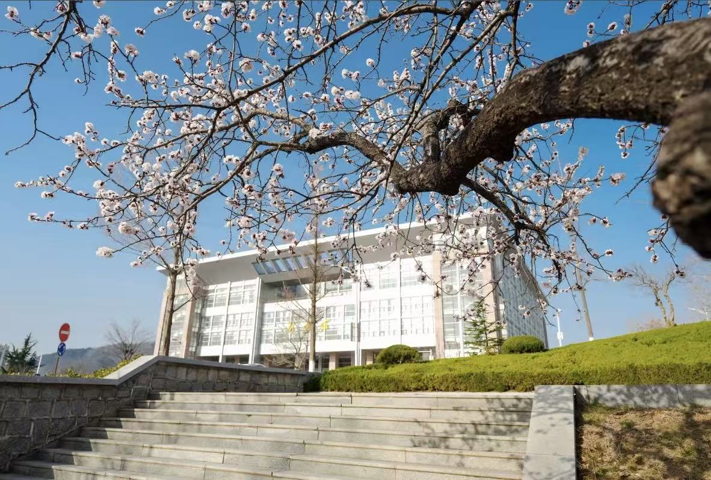
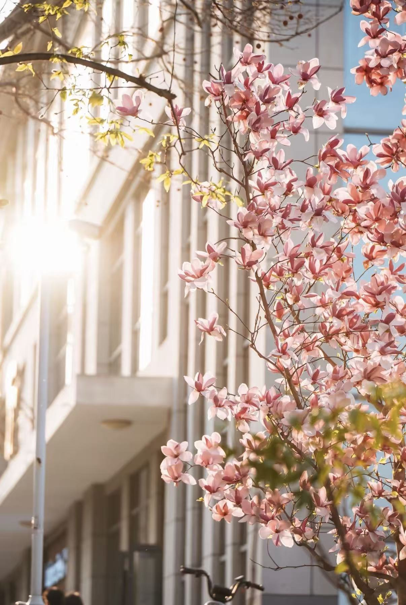

春风拂过校园，万物复苏，生机盎然。枝头的嫩芽悄悄探出脑袋， 唤醒了沉睡一冬的校园。阳光透过树叶的缝隙，洒下斑驳的光影， 为校园披上了一层温暖的金色外衣。
漫步在校园的小径上，微风裹挟着花香扑面而来， 让人忍不住停下脚步，感受这份独属于春日的美好。
樱花大道是校园春日的标志性景观，粉白的樱花如云似霞， 铺满了整条道路。春风吹过，花瓣随风飘落，形成浪漫的樱花雨， 成为师生们打卡拍照的热门地点。

教学楼前的海棠花竞相绽放，粉嫩的花朵缀满枝头， 与古朴的建筑相映成趣，为校园增添了一抹灵动的色彩。
< img src="haitang.jpg" alt="校园海棠花">春日的校园，处处是风景。湖边的柳树抽出新条，随风摇曳； 草坪上的小草探出脑袋，绿意盎然；教室里传来朗朗书声， 与窗外的春色融为一体，构成了最美的校园春景图。
